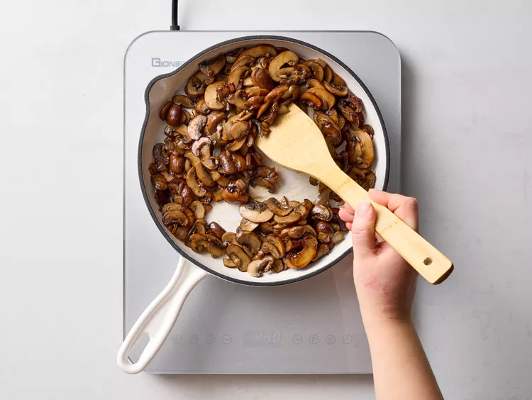
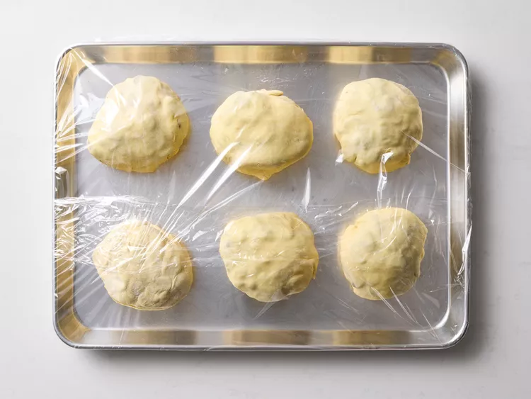
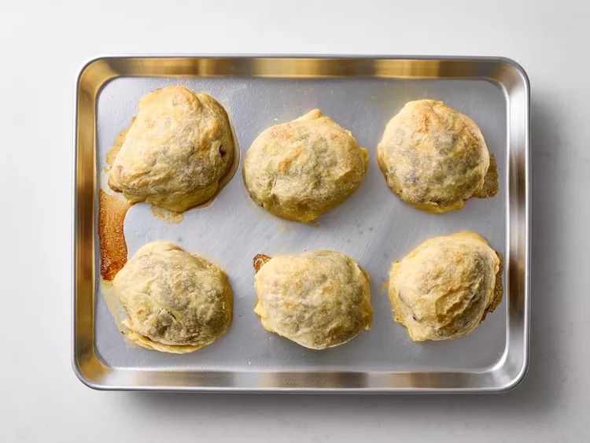

Description
This Beef Wellington recipe lets you serve each of your guests an individual beef Wellington for an impressive main dish. Plus, it saves you from having to carve at the table! For best results, the beef tenderloin should be served medium-rare.
Ingredients
- 1 pound of fresh mushrooms, sliced
- 1/2 cup dry sherry
- 1/2 cup chopped onion
- 1/4 cup butter
- 1/4 cup chopped parsley
- 6 (8 ounce) fillets beef tenderloin
- 1 (17.5 ounce) package frozen puff pastry, partially thawed
Steps
- Gather the ingredients
- Combine mushrooms, sherry, onion, butter, and parsley in a large skillet over medium heat; cook and stir until all the liquid is absorbed and mushrooms are well browned, about 15 to 20 minutes. Allow to cool, then cover the top of each piece of tenderloin with mushroom mixture. 
- Cut each partially thawed puff pastry sheet into 3 rectangles, for a total of 6 pieces of puff pastry. Roll out each puff pastry rectangle to about 1/4-inch thickness and place beef in the center; fold up and seal all the edges, making sure the seams are not too thick.
- Place on a baking sheet, cover with plastic wrap, and store in the refrigerator until 35 minutes before serving time. 
- Preheat the oven to 425 degrees F (220 degrees C). Bake beef Wellingtons in the preheated oven for 25 minutes. An instant-read thermometer inserted into the center should read 130 degrees F (54 degrees C) for medium rare. Let rest for 5 minutes before serving. 
- Serve and enjoy!


Nutrition Facts(per serving)
- 946 calories
- 66g fat
- 44g carbs
- 42g protein